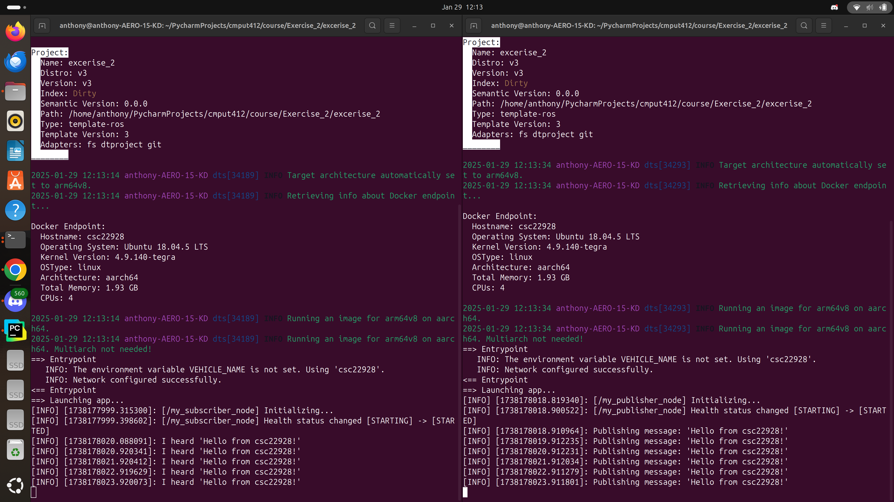
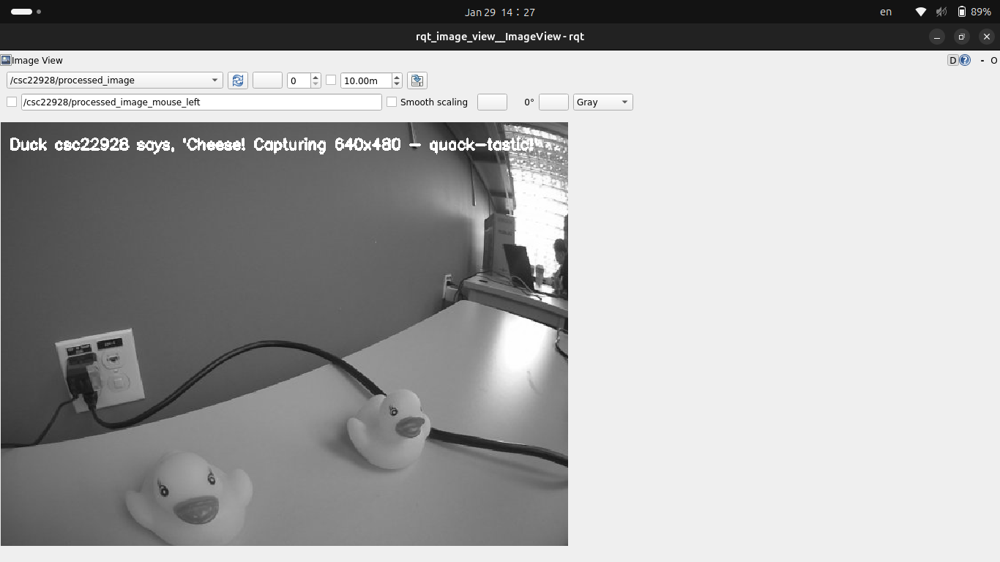
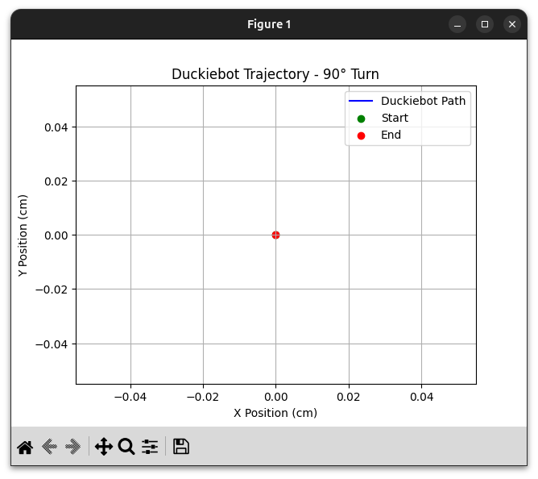
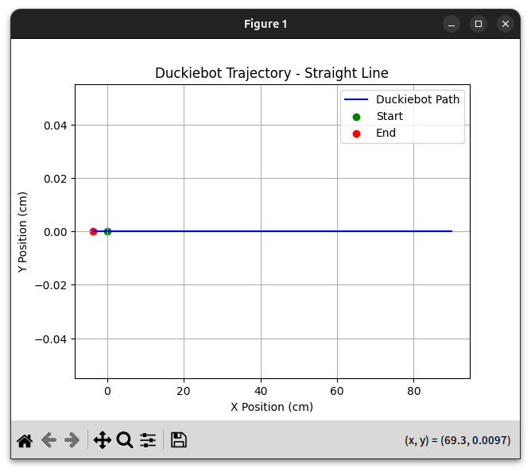
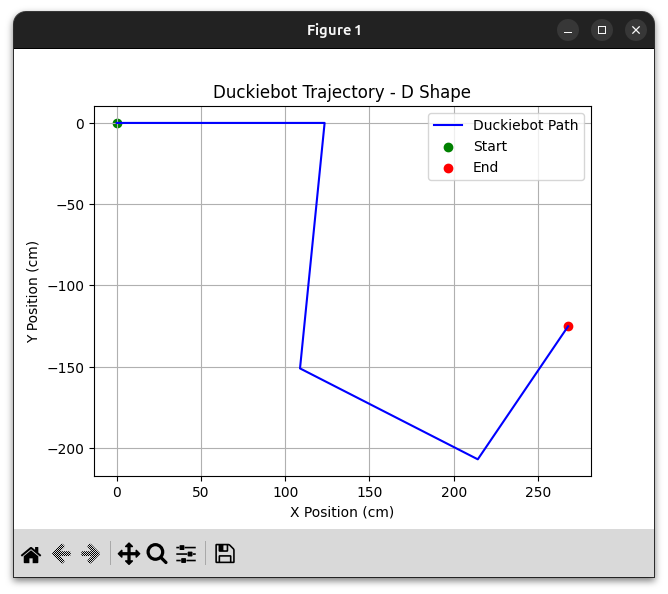
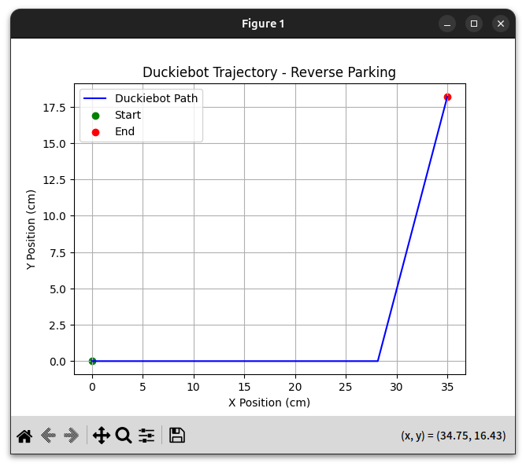

Deliverables
ROS basics
Node
A ROS node is a functional unit that provides some service, operation, or functionality. For example, a node may control a robot's wheel motors or perform some computation with data received from another node. Nodes in ROS are analogous to processes in an operating system. Although each performs a small task, they collectively form an entire software system capable of handling complex tasks.
Topic
Topics are unidirectional channels over which nodes communicate. Nodes identify a topic by a string that represents its name. Instead of sending messages directly to each other, nodes publish messages to topics so that nodes that subscribe to the same topics will receive them. Topics decouples the sender from the receiver. This is especially useful when multiple nodes want data from a single node. Instead of having the sender keep track of all the receivers, the sender can just broadcast the message over a topic, and any nodes interested in the data can subscribe to the topic.
Message
To communicate, nodes must put all the data they wish to share in a message. Messages specify what data it can carry through a series of fields - the data type and the name. The advantage of this structure becomes apparent in the context of services, where a pair of message definitions specify the inputs and outputs of a service (the number of arguments/return values, their positions, and their data type).
Bag
A ROS bag is a file that stores ROS message data. Typically, a bag file is created using rosbag, which subscribes to topics and writes messages to the file as they are received. The recorded messages can then be played back to another arbitrary topic, or used in offline analyses.
Setting Up Communication
Planning
This is an important step that is easy to overlook. What do we hope to achieve? How many nodes do we need? What kind of messages will the nodes exchange? Are the primitive message types sufficient, or do we need to design new messages? If we need new messages, we should design them first so we can use them when defining our nodes.
Identify already-available resources
Most of the time we want to interact with the robot. Therefore, the robot may have topics and services we can use in our nodes. We can use rostopic list and rosservice list to identify topics and services from the robot that we can leverage. It is also useful to find out what kind of message the topics and services accept. In the case of services, knowing the type of the return message is also very important.
Define the node(s)
Implement the logic and functionality of the nodes. Specify the topics they will publish/subscribe to and the services they will use.
Deploy & Test
It is time to deploy the nodes to the robot and watch everything work seamlessly and perfectly! If something does not work, be sure to go back and check whether you are using the right topics and/or services for the job, whether you are publishing the right messages to them, and, most importantly, whether you are spelling their names correctly :P
Publisher-Subscriber

This image captures the communication between a custom ROS publisher and subscriber node. The publisher node sends messages to the topic "/csc22928/custom_topic", while the subscriber node receives and processes this data. In this example, the publisher transmits a string message (e.g., "Hello from csc22928!"), and the subscriber logs the received content to the terminal. We developed two nodes: one to publish data and another to subscribe, demonstrating ROS's publish-subscribe architecture. This exercise reinforced foundational concepts such as topic naming, message types, and node initialization. The screenshot validates successful communication, showing real-time data exchange between nodes, a critical skill for building modular robotic systems with ROS.
Annotated Grayscale Image

This image shows the rqt_image_view windows subscribed to the topic "/csc22928/processed_image". The data received from the topic is a grayscale image annotated with "Duck csc22929 says, 'Cheese! Capturing 640x480 - quack-tastic!'". The original image captured by our Duckiebot is RBG and without annotations. We wrote a ROS node that subscribes to the robot's camera, takes the received image data, converts the image from RGB to grayscale and annotates it using OpenCV, and publishes the processed image to the topic "/csc22928/processed_image". We practiced how to take data from the robot, perform our computations on it, and publish our results on another topic. Additionally, we were also introduced to a well-known computer vision library, OpenCV.
Move the Duckiebot
Video of Duckiebot driving forward 1.25 meters and then backward 1.25 meters: https://www.youtube.com/shorts/58vgK89H5cQ
This video shows our Duckiebot driving forward 1.25 meters and then backward 1.25 meters. The goal was to have it drive parallel to the yellow line all the way through, but the Duckiebot deviated slightly to the right. The robot exhibited a constant drift to the right. This may be due to
- Uneven wear on the motors,
- The rubber tires are deformed,
- The robot was simply not placed perfectly parallel to the yellow line before starting the program,
- As per a discussion with Adam, the wheels of the robot may slip; the robot did not go anywhere, but a tick was accumulated in the wheel encoders, and
- Incorrect calculations
We noticed that when the Duckiebot was crossing the second mat connector while driving forward, there was a slight, but sudden, jerk to the right. Another thing that caught our attention was the transition from driving forward to driving backward. We should have had the robot gradually slow down to a stop, rather than coming to a sudden stop and immediately started reversing because the sudden jerk could have thrown the robot off its original track.
Why is there a difference between the actual and desired location?
Besides the reasons listed above including the right drift, the temporary loss of traction also played a role. When the Duckiebot takes off from stationary, whether moving forward or backward, we notice that the wheels initially struggle for traction (burnout) and spin more than the actual distance travelled. This results in a slightly shorter distance travelled.
What speed did you use? We used 0.5
What happens when you increase or decrease the speed?
When we increase the speed, the actual position of the duckiebot deviates more from the desired location. This is most likely due to more right drift and temporary loss of traction as we give the wheels more power. The opposite happens when we decrease the speed: the actual position gets closer to the desired position as we experience less drift and traction loss
Turn the Duckiebot
This video shows the Duckiebot turning 90 degrees clockwise, then 90 degrees counter-clockwise, on the spot. Our approach for rotating on the spot was to turn both wheels in opposite directions, as opposed turning only one wheel and keeping the other stationary. We recognize that turning two wheels at the same time is harder to control than turning one wheel, and is more prone to deviations. Deviations in the rotation can be caused by incorrect kinematics calculations. Similar to the previous "forward-backward" task, this deviation can also be caused by the temporary loss of traction when initiating rotation from stationary. We mostly fixed this problem by reducing the speed of the wheels.
Duckiebot Pathing
This video shows our Duckiebot driving on the D-shaped track. The LEDs on the Duckiebot indicate its state. Red means the robot is at rest; Blue means the robot is driving in a D shape.
Bonus: Reverse Parking
This video shows our duckiebot performing a reverse parking between two other duckiebots. It manages to park in the stall without hitting the other two duckiebots. We leveraged duckiebot's strength: being able to turn its two wheels independently. This allows us to rotate the duckiebot 90 degrees in place, something our cars cannot do.
Plotting the tracked trajectory
The bag files were recorded using the rosbag utility; all topics were recorded, but we only read the ones that would help us plot the trajectory. Specifically, we used the message stream from the "/csc22928/wheels_driver_node/wheels_cmd_executed" topic. We extracted the velocities of the left and right motors from the messages and calculated the (x, y) coordinates using the forward kinematics calculations we learned in class. Our plotting script is written in Python, and we plot using the matplotlib module.
Monta suggested that we were doing things the hard way. The implementation of our code is error-prone, and there could be latent numerical instabilities in the calculations.
Note: The bag files were recorded separately from the videos.

The figure above shows the robot's trajectory performing an on-spot 90-degree turn on-spot. The trajectory is just a single dot on (0, 0) because we programmed our robot to turn by driving the left and right wheels in opposite directions, but at the same speed. The center of rotation, then, is halfway between the wheels.

The figure above shows the robot's trajectory driving 1.25 meters (125 cm) forward, and then reversing 1.25 meters (125 cm) backwards, both in a straight line. There is no movement in the y-axis because the robot was driving in a straight line. We understand that it is extremely unlikely that the robot will return to the same spot as where it started, hence the slight difference in the start and the endpoint. There is, however, a big difference between the distance travelled as shown on the plot, and the distance the robot was programmed to travel (less than 1 m versus 1.25 m). We suspect the cause to be related to the wheel encoders.

The figure above shows the robot's trajectory driving the D-shaped track. Only the first horizontal trajectory is accurate because we made a mistake in publishing the commands to turn in a curve to the robot. During the curve turning, we only published one message to the robot; the message instructs the robot to drive the left wheel 2.5 times faster than the right wheel. Empirically, the robot was able to turn in a curve, and it took about 1 second. However, it means we only have one data point for the entire turn; the data resolution was too low. Since we used forward kinematics, it resulted in an over-accumulation of the change in the angle in the robot's frame, and hence also in the initial frame, resulting in the weird trajectory as shown in the figure.

The figure above shows the robot's trajectory performing the reverse parking; we programmed the robot to drive 20 cm forward, then turn 90 degrees clockwise, and finally reverse straight for 10 cm. Both the forward and reverse commands were only issued once, causing a low resolution in the data points, and ultimately an over-accumulation of the distance in the forward kinematics calculations. The plot also shows the robot turned slightly less than 90 degrees. We are unsure why, but we suspect the cause to be related to the wheel encoders.